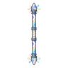

ดาวตกจิ๋ว
มอนธาตุศักดิ์สิทธิ์ Lv 97–99
เจอที่
| แมพ | โซน | Lv | ภูมิภาค |
|---|---|---|---|
| หลุมดาว ชั้น 1 · พื้นแก้ว | 97–98 | ที่ราบสูง | |
| หลุมดาว ชั้น 2 · ใจกลางดาว | 99–99 | ที่ราบสูง | |
| หอรากมืด (Dark Root) | รากกินดาว | 71–80 |
ค่าสถานะตามเลเวล
| Lv | HP | ATK | DEF | MDEF | EXP | Job |
|---|---|---|---|---|---|---|
| 97 | 50,171 | 228–343 | 23 | 17 | 131 | 98 |
| 98 | 51,545 | 232–349 | 24 | 18 | 132 | 99 |
| 99 | 52,938 | 236–354 | 24 | 18 | 134 | 101 |
ตีด้วยธาตุไหนดี
แรงขึ้น: มืด ×1.25
เบาลง: น้ำ ×0.75 ดิน ×0.75 ไฟ ×0.75 ลม ×0.75 พิษ ×0.75 วิญญาณ ×0.75 ศักดิ์สิทธิ์ ×0
วัตถุดิบที่ดรอป
| ของ | โอกาส | |
|---|---|---|
| ก้อนดาวตกจิ๋ว | 66% | 1 ชิ้น (15% ได้ 2) |
อุปกรณ์ที่ดรอป (9)
| ของ | โอกาส |
|---|---|
| 0.25% | |
| 0.25% | |
| ชุดกุหลาบหนาม (เสื้อ) | 0.15% |
| ชุดกุหลาบหนาม (กางเกง + รองเท้า) | 0.15% |
| 0.12% | |
| 0.12% | |
| 0.08% | |
 ไม้พลองรุ้งกลางคืน | 0.06% |
| ชุดกุหลาบหนาม (กุหลาบดำ) | 0.05% |
สกิล
กระโจน (Lv 25+) · กระโจน (Lv 60+)